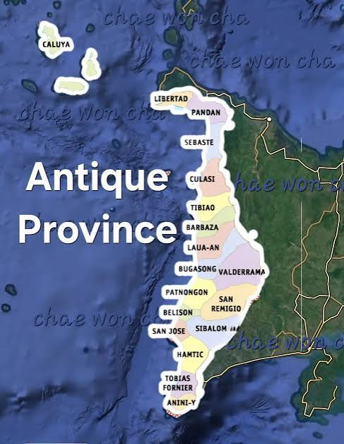
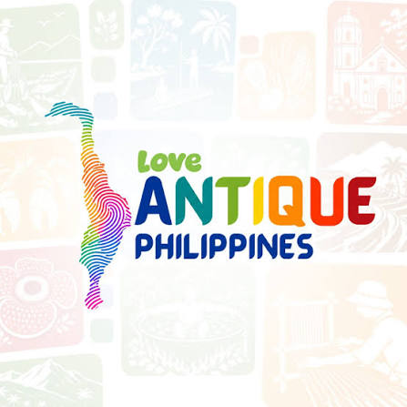

About Antique Escapes

Who we are
Antique Escapes is a tourism guide website created to introduce the beautiful places, culture, and attractions of Antique.
Our mission
To provide helpful tourism information and encourage people to explore and appreciate the natural beauty of Antique.
Our vision
To promote Antique as a memorable travel destination while encouraging responsible tourism.

Discover our culture
Learn about the traditions, local products, and natural attractions of the province.
Discover Destinations